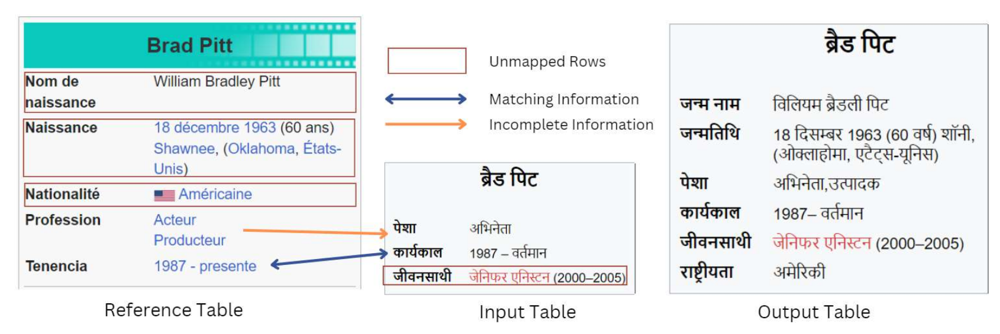

Leveraging LLMs for Synchronizing Information Across Multilingual Tables
About
The vast amount of online information today poses challenges for non-English speakers, as much of it is concentrated in high-resource languages like English, Spanish, and French. Wikipedia reflects this imbalance, with content in low-resource languages often outdated or incomplete. This paper explores large language models (LLMs) for multilingual information synchronization, using zero-shot prompting as a scalable solution. We introduce the Information Updation dataset, simulating the process of updating outdated Wikipedia tables, and evaluate LLM performance.
TL;DR: We propose a novel dataset and LLM-based approach for multilingual table synchronization, significantly improving information updation accuracy.
Procedure
We construct an Information Updation dataset by extracting outdated and updated Wikipedia tables across multiple languages. Using a task decomposition approach, we employ large language models to enhance synchronization accuracy. Our evaluation includes comparisons with rule-based methods and an in-depth analysis of model performance on various linguistic structures.
Example
Below is an example of information synchronization from our dataset. On the right is a reference table in a high-resource language, and on the left is an outdated table in a low-resource language. Updates made by our model are highlighted.

Methodology
We propose a hierarchical task decomposition strategy for LLM-based synchronization. This includes:
- Translation: Converting tables into a common language (English) for uniform processing.
- Knowledge Graph Construction: Representing tables as structured graphs for improved reasoning.
- Alignment and Merging: Identifying and integrating missing or outdated information.
- Final Update: Refining the synchronized table and translating it back into the target language.
Dataset Statistics
Our dataset spans multiple Wikipedia categories and languages. Below is a summary of dataset statistics:
| Data Split | Number of Tables | Number of Pairs |
|---|---|---|
| Train | 1800 | 17000 |
| Dev | 250 | 2250 |
| Test | 250 | 2250 |
| Data Split | Cohen's Kappa | Human Performance | Majority Agreement |
|---|---|---|---|
| Dev | 0.81 | 80.5% | 94.2% |
| Test | 0.79 | 82.1% | 95.0% |
Knowledge + InfoTabS
You should check our NAACL 2021 paper which enhance InfoTabS with extra Knowledge.
TabPert
You should check our EMNLP 2021 paper which is a tabular perturbation platform to generate counterfactual examples.
People
The INFOTABS dataset is prepared at the School of Computing of University of Utah by the following people:


Citation
Please cite our paper as below if you use the INFOTABS dataset.
@inproceedings{gupta-etal-2020-infotabs,
title = "{INFOTABS}: Inference on Tables as Semi-structured Data",
author = "Gupta, Vivek and
Mehta, Maitrey and
Nokhiz, Pegah and
Srikumar, Vivek",
booktitle = "Proceedings of the 58th Annual Meeting of the Association for Computational Linguistics",
month = jul,
year = "2020",
address = "Online",
publisher = "Association for Computational Linguistics",
url = "https://www.aclweb.org/anthology/2020.acl-main.210",
pages = "2309--2324",
abstract = "In this paper, we observe that semi-structured tabulated text is ubiquitous; understanding them requires not only comprehending the meaning of text fragments, but also implicit relationships between them. We argue that such data can prove as a testing ground for understanding how we reason about information. To study this, we introduce a new dataset called INFOTABS, comprising of human-written textual hypotheses based on premises that are tables extracted from Wikipedia info-boxes. Our analysis shows that the semi-structured, multi-domain and heterogeneous nature of the premises admits complex, multi-faceted reasoning. Experiments reveal that, while human annotators agree on the relationships between a table-hypothesis pair, several standard modeling strategies are unsuccessful at the task, suggesting that reasoning about tables can pose a difficult modeling challenge.",
}Acknowledgement
Authors thank members of the Utah NLP group for their valuable insights and suggestions at various stages of the project; and ACL 2020 reviewers for pointers to related works, corrections, and helpful comments. Authors thank the largest free resource Wikipedia for InfoTabS tables. We are also indebted to the many anonymous Turkers who helped craft the dataset. We acknowledge the support of the support of NSF Grants No. 1822877 and 1801446, and a generous gift from Google.